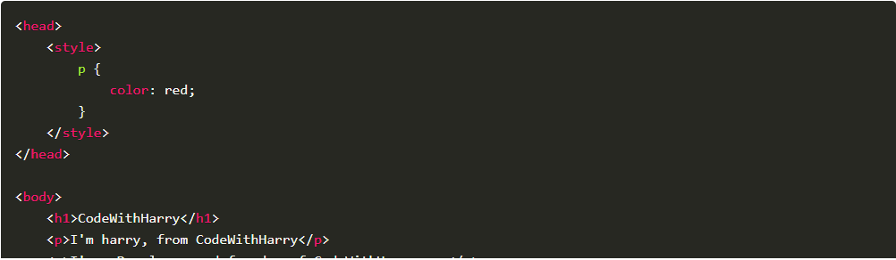

Inline CSS Is Used By Adding Style Attribute To Opening Tags Of Your HTML Elements Like Below Examaple But It Is Not Recommended Using It Cause If You Want To Re-edit Your CSS In Bulk That'll Be A Huge Headache For You But In Some Cases Iniline CSS Might Generates Automatically That We Will Explore In Further Classes.
I'm Styled Using Inline CSS (NOT RECOMMENDED) Must Avoid Using
Internal CSS Is Used By Placing Style Tag Between Head Tag Like Example Below And It Is Used If Your Styling Is Not That Much Like A Small Website Or Project.
External CSS Is Used By Making A .css File With Any Name But Coders Mostly Use style.css And Then Linking That Style Sheet File To Your HTML Within Head Section Like The Example Below And This Method Is Most Recommended When Working On Production Grade Website Or Projects Like Facebook, WhatsApp Web.